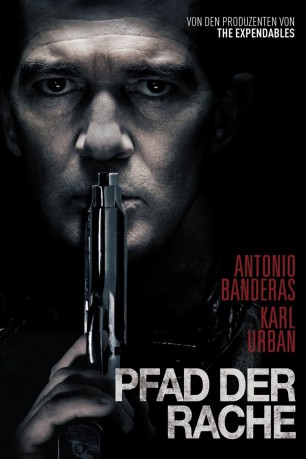
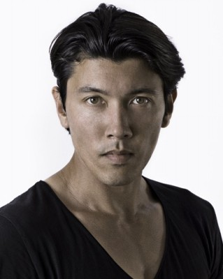
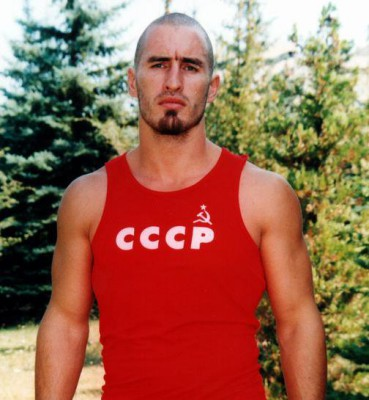

#8091 Pfad der Rache
Alternativ: Acts Of Vengeance (Englischer Titel)
 
 IMDB-Wertung: 5.7 / 10
IMDB-Wertung: 5.7 / 10  Metascore: 49
Metascore: 49 
Die Ermordung seiner Frau Sue (Cristina Serafini) und der gemeinsamen Tochter Olivia (Lillian Blankenship) stürzen den Familienvater und Anwalt Frank Valera (Antonio Banderas) nicht nur in ein Loch tiefer Trauer, sondern auch in einen Strudel der Verzweiflung. Weil Polizei und Justiz mit ihren Ermittlungen keinerlei Fortschritte machen, untersucht der redegewandte Strafverteidiger den Fall nun selbst und begibt sich ganz allein auf die gefährliche Suche nach den Mördern seiner Liebsten. Mit seiner steigenden Wut über den schmerzenden Verlust wächst auch seine Disziplin: Frank legt ein Schweigegelübde ab und macht aus seinem Körper mit Trainingseinheiten bis zur Erschöpfung eine stahlharte Waffe, um schließlich selbst Rache an den Tätern zu üben. Durch seine selbst auferlegte Mission wird nicht nur die russische Mafia auf ihn aufmerksam...
Jahr: 2017
Dauer: 86 Minuten
FSK: 16
Land: Bulgarien Studio: Millennium MediaTonspuren: DTS - ,
Untertitel: Deutsch,
Auflösung: 1080p (1920x1036) Größe: 6768 MB
Genre: Action, Drama
Regisseur: Isaac Florentine
Drehbuch: Matt Venne
Soundtrack: Frederik Wiedmann
Darsteller:
 Antonio Banderas als Frank Valera
Antonio Banderas als Frank Valera- Cristina Serafini als Sue Valera
- Lillian Blankenship als Olivia Valera
 Owen Davis als Man #3
Owen Davis als Man #3 Clint Dyer als Shivers
Clint Dyer als Shivers- Keith D. Evans als Man 2
- Isaac Florentine als Karate Sensei
 Robert Forster als Chuck
Robert Forster als Chuck Tim Man als Jiu-Jitsu Sensei
Tim Man als Jiu-Jitsu Sensei-  David Sakurai als Hulking Man
 Johnathon Schaech als Lustiger
Johnathon Schaech als Lustiger Mark Rhino Smith als Police Officer
Mark Rhino Smith als Police Officer Karl Urban als Strode
Karl Urban als Strode Paz Vega als Sheila
Paz Vega als Sheila- Grace Wan als Customer
 Atanas Srebrev als Senior Partner
Atanas Srebrev als Senior Partner- Elizabeth Brace als Young Girl
- Stacey Clickner als Stage Manager
- François Coetzer als Officer
- Brenda Galaz-Magyar als Woman 1
- Konstantin Ikonomov als Obese Patron
- Krastyo D. Krastev als Priest
- Brian Manning als Slick-Suited Young Guy
- Katie Manning als Woman 2
- Laura Goish Markov als Waitress
- Krum Metodiev als Young Magician
- Derek Morse als Man #1
- Velislav Pavlov als Colonel
- Yordan Rasin als Drunk
- Dawn Sherrer als Paralegal
- Michael Townsend als Man 1
-  Raicho Vasilev als Timofei
- Vladimir Vladimirov als Referee
- Yordan Zahariev als Referee 2
Datei: X:\2017(N-Z)\Pfad der Rache (2017, FSK16, 1920x1036).mkv seit 24.01.2018
Festplatte: HD 2017(A-Z)-2018(A-F)
 Es gibt insgesamt 170 Filme in der Gruppe '2017(N-Z)'
Es gibt insgesamt 170 Filme in der Gruppe '2017(N-Z)'